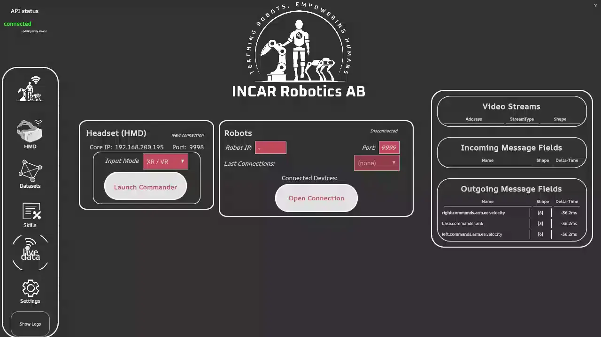

Running GR00T
GR00T is a Foundation model created by NVIDIA. In order to avoid dependency conflicts, we can finetune GR00T using the GR00T stack. Then, we start a policy server to which we can connect with a simple extension.
An extension for GR00T already exists in the incar_baselines package. This example walks through how to use the extension, but you can also look at the code as an example for writing your own policy extension with server-client architecture.
Motivation
VLA's are promising in providing robustness to domain shift. For example, using a simple diffusion policy, performance breaks down as soon as the window blinds in our lab are opened:
Diffusion on varying lighting conditions

However, using GR00T, the lighting conditions are irrelevant. Even though it is trained on the same dataset as the diffusion policy. Moreover, it can generalize to e.g. blue liquid instead of red liquid, even though the policy has not seen this in the training data.
GR00T on varying lighting conditions

Prerequisites
-
Clone and install the GR00T repo which we will use for training.
-
In the
incarenvironment, install thegr00t-extras. This will allow us to set up the policy client and convert the dataset to the right format
# Remember to source the incar environment
pip install incar[gr00t]
Finetuning
After collecting a dataset, finetuning can be done in three steps:
- Use
incar trainto pre-process the dataset (including changing it tolerobot_v2format) and create a skill that can be selected to start a policy client for inference. - Create a modality config for GR00T
- Train in the GR00T repo
Train Config
A train config for a GR00T policy looks as follows:
1 2 3 4 5 6 7 8 9 10 11 12 13 14 15 16 17 18 19 20 21 22 23 24 25 26 27 28 29 30 31 32 33 34 35 36 37 38 39 40 41 42 43 44 45 46 47 48 49 50 51 52 53 54 55 56 57 58 59 60 61 62 63 64 | |
- Set
validation_ratioto0since validation will be handled by the GR00T repo, so we should not split our data here video_to_h5can be set tofalseto save disk space.- We have a
lerobot_v2_conversionstep, which will convert the dataset from the Incar format to the LeRobot V2 format which GR00T expects - No need to include number of steps or validation/save frequencies.
The end-result is a dataset saved in <YOUR_WS>/datasets_lerobot/<DATASET_NAME>.
Modality and Embodyment
Before training can start, you need to supply GR00T with a modality config and embodyment.
The modality config is a file named modality.json placed in <YOUR_WS>/datasets_lerobot/<DATASET_NAME>/meta.
The embodyment is a python file that can be placed anywhere.
Follow the steps here for information and tutorials on how to define this configuration.
Finetune
In the GR00T repo, run the following command to start finetuning (for more info about settings, check the GR00T documentation):
CUDA_VISIBLE_DEVICES=0 uv run python gr00t/experiment/launch_finetune.py\
--base-model-path nvidia/GR00T-N1.6-3B\
--dataset-path <PATH_TO_DATASET>\
--embodiment-tag NEW_EMBODIMENT\
--modality-config-path <PATH_TO_EMBODYMENT_PY>\
--num-gpus 1\
--output-dir <MODEL_SAVE_PATH>\
--save-total-limit 5\
--save-steps 20000\
--max-steps 100000\
--use-wandb\
--global-batch-size 32\
--color-jitter-params brightness 0.3 contrast 0.4 saturation 0.5 hue 0.08\
--dataloader-num-workers 4
Failure
GR00T finetuning unfortunately requires a lot of VRAM (NVidia recommends 40GB+). On a RTX 5090 it might be possible to finetune when changing the used optimizer.
Running Inference
To run inference, first start the policy server in the GR00T repo:
uv run python gr00t/eval/run_gr00t_server.py\
--embodiment-tag NEW_EMBODIMENT\
--model-path <PATH_TO_FINETUNED_MODEL_CHECKPOINT>\
--device cuda:0\
--host 127.0.0.1\
--port 5555
Then, like any other policy, select and load it in the skills panel. It will start a policy client connecting to the server and start inference.
